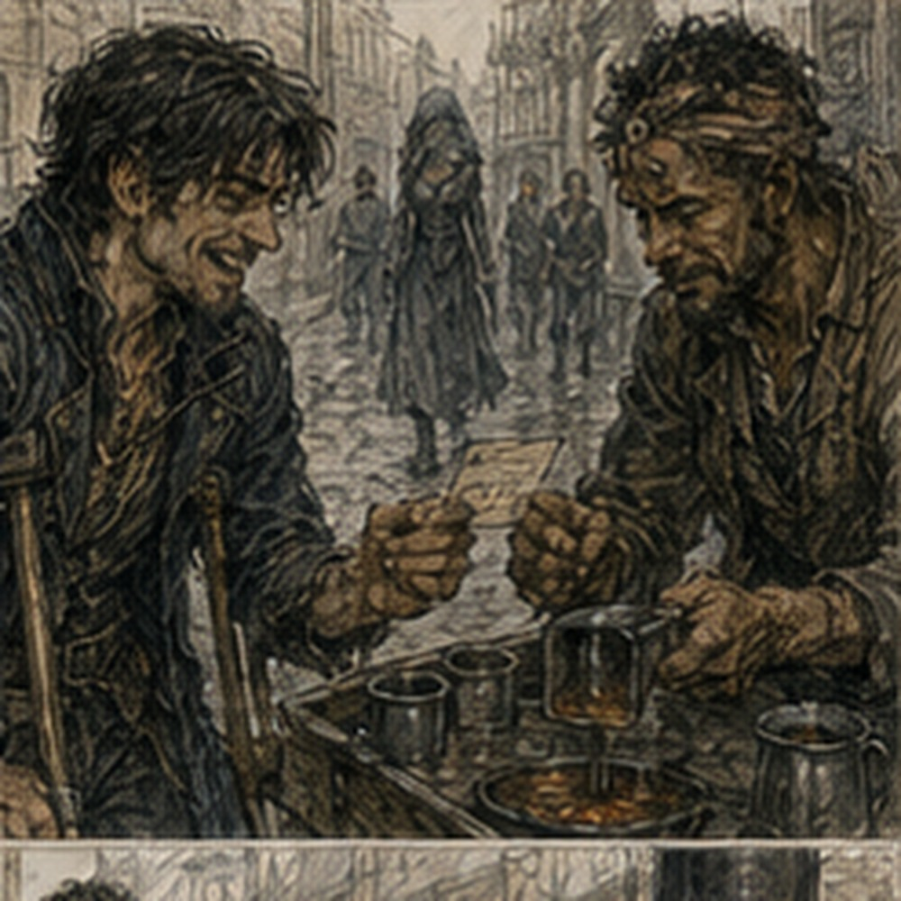

Lio lived above a cooper. This became obvious before Sevren said anything because the stairwell smelled like wet oak, old beer, and heat. The stove was on the third floor. Of course.
“Why is it upstairs?” I asked.
“Because Lio lives upstairs.”
“That is not what I meant.”
“I know.”
Sevren climbed. I followed. The staircase turned twice and narrowed on the second landing. Bad. I looked at the rail. Bad. Ceiling at the turn. Worse.
“Did you measure it?”
“No.”
“Sevren.”
“I have seen the stove.”
“That is not measuring.”
“I have also seen the stairs.”
“That is somehow worse.”
He knocked on the third-floor door. A man opened it before the second knock. Lio was broad in the shoulders and narrow everywhere else. Maybe thirty. Copper-brown hair cut short. One ear folded oddly at the top.
His shirt had soot on one sleeve and flour on the other. Interesting.
“You brought someone,” Lio said.
“Greg,” Sevren said.
“Barrier Greg?” Lio asked.
I looked at Sevren. He looked delighted.
“No,” I said.
Lio nodded.
“Good.”
Good?
“Why good?”
“Sevren said you ask a lot of questions.”
“That is less specific than I expected.”
Lio shrugged.
“I had not met you yet.”
Hostile information network. Lio stepped aside.
“Stove.”
The room was small. Not poor exactly. Used. Bed against one wall. Table. Two chairs. Shelf of jars. A blue coat hanging beside the window. The stove sat in the corner. Cast iron. Short legs. Rectangular body. Pipe already removed. Heavy. Not enormous. Still heavy. I walked around it. Sevren leaned against the table. Lio picked up a coil of rope.
“Where is it going?”
“Downstairs.”
“Yes.”
“Where downstairs?”
“Cooper yard.”
“Why?”
“New one tomorrow.”
“Why new?”
“This one smokes.”
“Pipe?”
“No.”
“Flue?”
“No.”
“Door seal?”
“No.”
I stopped. Lio smiled.
“I tried things.”
Good.
“What is wrong?”
“Crack underneath.”
He crouched and pointed. There. Hairline split near the rear plate.
“Repair?”
“Not worth it.”
“Who said?”
“Smith.”
“Which?”
“Not yours.”
I did not have a smith. Dara would object.
“Fine.”
I looked at stairs again.
“Did it come up these stairs?”
“Yes.”
“How?”
Lio pointed at Sevren. I looked. Sevren shrugged.
“Two years ago.”
“You moved it up?”
“Yes.”
“How?”
“Carefully.”
“That is not a method.”
“It worked.”
Lio laughed. I liked him too. Dangerous city.
“Same stair rail?”
“Yes.”
“Same table?”
“No.”
“Why does table matter?”
“I don't know yet.”
Sevren pushed away from it.
“Can we move the stove?”
I held up a hand.
“No.”
Both men stared.
“What?”
I said, “We need path first.” Sevren looked at the stove. Then door. Then stairs.
“It fits.”
“How do you know?”
“Because it came in.”
“Objects can enter spaces they cannot leave cleanly if surrounding conditions changed.”
“What changed?”
“I don't know.”
“Then maybe nothing.”
I hated this. Lio said, “Window.” I looked. Third floor.
“No.”
“I didn't say use it.”
Good. We cleared the path. Chair out. Table shifted. Rug rolled. Jar shelf did not matter. Door opened fully. At the first stair turn, the wall had a new peg rack. There. Changed. I pointed.
“Remove that.”
Lio said, “It comes off.” He removed it. Sevren looked at the open turn.
“There.”
“Yes.”
“Now it fits.”
“Probably.”
We returned to stove. Rope under. Blanket around iron corners. Lio had done this before. Not his first stove.
“Who takes bottom?” Sevren asked.
“Me,” I said.
Lio said, “No.” I looked at him.
“My stairs,” Lio said.
Fine. He took bottom. Sevren top. I took side at first. No. Bad. Too narrow.
“Three won't work.”
Sevren said, “Two did last time.”
“Then why am I here?”
“Stove is heavy.”
Good question. Lio said, “You take top with Sevren until door. Then one drops.” Better. We lifted. Heavy. Young body. Better than yesterday. Not fun. We moved four feet. Stopped. Regrip. Another three. Door. Threshold lip. Sevren lifted before I was ready.
“Wait.”
He froze. Good. Not chaos.
“What?”
“Blanket caught.”
I pulled it free.
“Go.”
We moved. Landing. Now narrow. I dropped out. Lio bottom. Sevren top. Rope looped around stove body and over Sevren's shoulder. He controlled descent with hips and legs. Professional? No. Experienced enough. I walked below, not touching, watching corners.
“Left.”
“I know.”
“Lower.”
“I know.”
“Stop.”
He stopped.
“What?”
Rear leg near stair edge. One inch.
“Shift right.”
“No room.”
I looked. Wall. Rail. Stove. If lifted two inches and rotated.
“Up.”
Sevren tried. Nothing. Lio under load.
“Can't.”
I started modeling force. Rope. Corner. Rail. Could Barrier under rear leg. Palm-sized unnecessary. Coin maybe. But deliberate support of heavy stove? Load would shatter. Could just buy a second. No.
“Back up.”
Sevren said, “Why?”
“Reset angle.”
He looked at the landing. Then at me.
“Or take the door off.”
“What door?”
Second-floor door opened inward into landing. It was closed. Hinges exposed. Oh. Sevren nodded at it.
“If door is off, I can step back into frame.”
Right. More body space. Simpler. Lio called down, “Mara!” The door opened. A woman in a nightshirt looked at three men and a stove.
“No.”
Good instinct.
“Need your door,” Lio said.
“No,” Mara said.
“Five minutes,” Lio said.
“No,” Mara repeated.
Sevren said, “Two.” She looked at him.
“One,” Mara said.
“Done,” Sevren said.
She shut it. We set stove back on landing. Lio removed hinge pins with a spoon handle and hammer. Mara opened again, now dressed enough to be angry.
“You scratch it, you fix it.”
“Yes.”
Door came off. Sevren stepped into her doorway. More room. We rotated stove. Passed turn. No magic. Excellent.

Mara watched.
“You moved that up?”
she asked Sevren.
“Yes.”
“Idiot.”
“Worked.”
“Still idiot.”
Related to Octavia spiritually. Door back on. One hinge pin resisted. Lio hit it twice. Sevren tried to align. Wrong. I saw sag.
“Lift door.”
Mara lifted. Pin dropped. Done. She looked at me.
“You useful?”
“Sometimes.”
“Good.”
Door closed. Second turn easier. First floor. Cooper yard. Sun. We set stove on two boards. Everyone breathed. Lio sat on it.
“No.”
I said. He stood.
“What?”
“Cracked.”
He looked at stove. Then laughed.
“Right.”
Sevren sat on a barrel instead. I leaned against wall. My shoulders hurt. Not badly. No magic. Good. A cooper came out and looked at stove.
“Scrap?”
Lio nodded.
“Legs good.”
“Take them.”
“Door?”
“Mine.”
Negotiation without money. The cooper brought water. We drank. This had taken maybe thirty minutes. Not a chapter. Good. Sevren looked at me.
“See?”
“What?”
“No measuring.”
“You removed a door.”
“Because problem arrived.”
“That is exactly what I object to.”
“But it worked.”
“After we stopped twice.”
“Stopping is allowed.”
This was infuriatingly reasonable. Lio said, “You two argue like old men.”
“I am older than him.”
Sevren said, “By?” I froze. Physical age. Nineteen. Sevren maybe nineteen or twenty.
“I don't know.”
He looked at me.
“You don't know how old I am.”
“No.”
“Twenty.”
“Then no.”
Lio laughed. Sevren pointed.
“You said older.”
“I was wrong.”
He grinned.
“Good.”
No future history. No hidden advantage. Just wrong. Lio went upstairs for something. Sevren drank more water.
“What now?” I asked.
“Stove moved.”
“Yes.”
“Done.”
“You have no next place?”
He thought.
“Not until fourth bell.”
“What happens fourth bell?”
“Route packet.”
“Octavia?”
“Maybe.”
“What if she already gave it away?”
“Then nothing.”
I stared. He shrugged.
“That bothers you.”
“Yes.”
“Why?”
“Because you have time.”
“I know.”
“And you are not allocating it.”
“I'm drinking water.”
That was allocation. Bad argument.
“What do you do when you have an hour?”
“This.”
He held up cup.
“Sometimes eat.”
“Sometimes?”
“Sometimes I don't have money.”
I looked at him. Not poverty. Normal.
“Do you save?”
“Yes.”
“For?”
“Things.”
“Which things?”
“Depends.”
“Sevren.”
“What?”
“You answer every question at the level where it becomes useless.”
He smiled.
“Not every question.”
“Name one.”
“Do you want to move a stove?”
I laughed. Fine. Lio returned with a small paper packet.
“Here.”
Sevren took it.
“What?”
“Your glove.”
Of course. Sevren opened packet. One brown glove. Mud dried on cuff.
“You had it?”
“Cart yard boy brought it.”
“You said probably cart yard.”
“Yes.”
“So not lost.”
I looked at him.
“It was lost.”
“Temporarily.”
“That is what lost means.”
“No. Lost means you don't know where it is.”
“You did not know.”
“I knew probably.”
Lio said, “He does this.” Good. Pattern. Sevren put glove on. Pair restored.
“Where did you help with his wheel?” I asked Lio.
“North road.”
“What happened?”
Sevren said, “Wheel.” Lio ignored him.
“Axle pin slipped. I had hammer.”
“So you fixed it?”
“Held cart while he reset.”
“Why were you there?”
“Bread.”
I looked at soot and flour on his shirt.
“What do you do?”
“Bakery mornings. Cooper afternoons when they need hands.”
Two jobs. Ordinary.
“And stove smoke?”
“Home.”
Right. People contained multiple things. No need to map. Lio looked at Sevren.
“You eating?”
“Yes.”
“Here?”
Sevren looked at me. I had no preference.
“Fine.”
Lio said, “I have beans.” Good. We went back upstairs. Mara's door remained closed. No retaliation. Lio cooked beans in a pot over a smaller clay burner near window. Temporary. New stove tomorrow. We ate at table. Three bowls. Bread from bakery. Good bread. Sevren ate fast. Lio slower. Conversation moved without me. A cooper named Fenn had smashed his thumb. Mara's sister was moving east.
The north road toll clerk had started wearing a red hat for no reason anyone respected. Sevren had delivered a package to a house that had moved. I interrupted.
“Houses don't move.”
“This one did.”
“No.”

“Address board moved.”
“Different.”
“Package did not care.”
Apparently a landlord had renumbered two rear units after dividing a building. Sevren spent half an hour finding the correct tenant.
“You could have returned it.”
“Yes.”
“Why didn't you?”
“He was nearby.”
“How did you know?”
“Laundry.”
I waited. No expansion.
“Laundry?”
“Woman next door said his shirts were still on line.”
There. Physical evidence. Present information. No model beyond need.
“You asked neighbor.”
“Yes.”
“So you did investigate.”
“No.”
“You did.”
“I asked where a man was.”
“That is investigation.”
“Then everything is investigation.”
“Many things are.”
Sevren looked at Lio.
“He makes words bigger.”
Lio nodded.
“I noticed.”
Hostile alliance.
“Fine.”
I ate beans. Lio asked me what I did.
“Bronze adventurer.”
“Only?”
“No.”
“What else?”
I opened mouth. Debtor. Barrier mage. Occasional porter. Research idiot. Antonius noise sorter. Friend? No.
“Work.”
Lio nodded.
“Good answer.”
Sevren laughed. I hated them both. After food, Lio left for cooper yard. Actual shift. He gave Sevren no dramatic thanks.
“Tomorrow?”
Sevren asked.
“Maybe.”
“Stove?”
“Delivery.”
“You need hands?”
“Two men coming.”
“Good.”
Done. We left. Street warm. Fourth bell still an hour away. Sevren turned west.
“Where?”
I asked.
“Nowhere.”
“You turned.”
“Yes.”
“Why west?”
“Shade.”
There were awnings. Fine. We walked. No objective. Strange. Sevren knew people. Not everyone. Enough. A fruit seller called him by name. He waved. A boy on a handcart asked if east bridge was clear. Sevren said yes, north lane muddy. No payment.
A woman outside a tailor shop handed him a folded note.
“Octavia if you see her.”
He took it.
“Urgent?”
“No.”
Pocket. No ceremony. Courier existed even when not paid. At a corner, Sevren stopped at a wall with faded chalk marks. Route board? No. Dice game. Three men. One woman. Coins.
“Do you gamble?”
I asked.
“No.”
He put one copper down.
“That is gambling.”
“Not much.”
“You literally just contradicted yourself.”
“I don't gamble seriously.”
Words smaller. He rolled. Lost. One copper. Done. No chase. No second bet.
“You lost.”
“Yes.”
“You don't care.”
“One copper.”
Economy. Interesting. Not destitute. Not rich. He walked away. I followed.
“Why?”
“Fun.”
“Losing?”
“Rolling.”
“That is stupid.”
“Yes.”
Simple. Old Greg would have calculated odds. Present Greg had two copper and no desire to lose one. Preference. Good. At fourth bell, we reached courier office. Not because Sevren had been watching clock. I had. He had somehow arrived anyway. Octavia was there. Of course. She handed Sevren a packet.
“East exchange. Before fifth.”
“Fine.”
She saw me.
“You survived the stove?”
“Yes.”
“Did he measure it?”
“No.”
“I told him to measure it when he moved it up.”
Sevren said, “It fit.”
“You removed Mara's door.”
He looked at me.
“How do you know?”
“Mara sent a boy.”
Of course. Octavia looked at him.
“Did you put it back?”
“Yes.”
“Correctly?”
“Mara's door closes.”
Not answer. She looked at me.
“Yes,” I said.
“Thank you.”
Sevren pointed.
“See? Useful.”
Octavia almost smiled again. She gave him second small packet.
“After exchange, this to south watch.”
“Before?”
“Sixth.”
“Fine.”
He tucked both into satchel. Then looked at me.
“Coming?”
I nearly said yes. Why? No reason. He was working. I was not. I could go Arlo. Varo. Antonius. Home. Nap.
“Do you need me?”
“No.”
Good. He waited anyway. Invitation. Not need. Different. I looked at Octavia. She had already returned to ledger. No opinion.
“Where is east exchange?”
“Twenty minutes.”
“Then south watch?”
“Another fifteen.”
“Then?”
“Don't know.”
Of course. I went. East exchange was a low brick building beside canal. Sevren delivered packet. Got receipt. No issue. South watch packet went to a woman with scarred chin who signed without reading in front of us. No issue. Work could work. Afterward, sixth bell had not rung. Sevren stretched.
“What now?” I asked.
“Drink?”
There.
“Your money?”
“Yes.”
“I have mine.”
“Good.”
We found a place near south wall. Not Jorren's place. Different. Small. Outdoor tables. Cheap beer. I bought my own. No accounting crisis. We sat. Sevren put satchel between his feet. Professional habit.
“Octavia hates your scheduling.”
“Yes.”
“You know.”
“Yes.”
“Why not fix it?”
He drank.
“Sometimes I do.”
“That is not an answer.”
“It is.”
“No.”
He looked at me.
“I don't forget routes.”
“You forget availability.”
“Yes.”
“You remember favors.”
“Usually.”
“You remember people.”
“Mostly.”
“You lose gloves.”
“Rarely.”
“You take messages that aren't jobs.”
“If they're easy.”
“You help move stoves.”
“If I said I would.”
I waited. Pattern. Not chaos. Priority system. Different from mine.
“What do you actually care about being reliable for?”
Sevren looked at me longer this time. Good question maybe.
“Things I said yes to.”
“But Octavia thought you were available.”
“I didn't say yes.”
“You failed to mark no.”
“Yes.”
“That creates same result for her.”
“I know.”
“And?”
He looked toward street.
“I'm trying to remember.”
There. No philosophy. No defense. Just flaw.
“You could write it.”
“I do.”
“Where?”
He reached into coat. Pulled small folded card. Names. Times. Two crossed out. One unreadable. One said STOVE. I laughed.
“What?”
“You have a system.”
“Bad one.”
“Yes.”
He put it away.
“Octavia made it.”
Of course.
“Does she know you use it?”
“No.”
“Why not?”
“She'll improve it.”
I laughed harder. There. Related. He smiled.
“She's right.”
“Yes.”
“Still.”
I understood. Dangerous. We drank. No future significance. No remembered name. No reason. Just Sevren. He asked about Barrier eventually. Not power.
“Can you stand on one?”
“Yes.”
“Could you put one under a cart wheel?”
“Briefly.”
“Why?”
“Why are you asking?”
“Wheel.”
Of course.
“What kind of problem?”
“Rut.”
“Maybe.”
“Could you make a ramp?”
“With many Barriers, once.”
“Now?”
“No.”
“Fine.”
He moved on. No disappointment. No optimization. He asked whether I liked Carrow. I almost gave a complicated answer.
“Yes.”
He nodded.
“Me too.”
That was it. At dusk, he stood.
“Tomorrow?”
I asked.
“Route.”
“Where?”
“North.”
“What kind?”
“Courier.”
Hostile.
“Will I see you?”
“Maybe.”
“Useful.”
He grinned.
“You'll live.”
Probably. He took satchel. Left. I stayed another minute. I had spent most of the day following another man's errands. No advancement. No important evidence. No strategic gain. I had moved a broken stove, eaten beans, watched Sevren lose one copper because rolling dice was fun, and learned he kept Octavia's schedule card hidden because she might improve it. This was ridiculous.
I liked him more. That was worse.